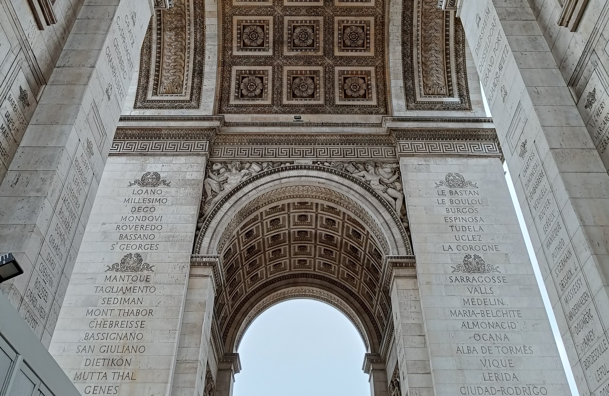

Paris was definitely one of the most packed holidays that I've been on, with a
bunch of both planned and spontaneous visits to many places. The supposed highlight of
the trip was the Hi-Fi show, where across 2 days, we went around a venue,
listening to the sounds that hundreds of companies had to offer through their
speakers and headphones. Whilst it was exciting at the start, I was personally
a little bored by the end. Luckily, I had many plans for tourist attractions to
visit and we balanced these along with the show.
One of the first places we went to was Arc de Triomphe, a humongous and intricate
monument, with a total of 284 steps to climb to the top. There was a pretty long
queue to even get to the stairs, but it meant that we had the chance to look
at the beautiful structure up close.

We also went to the Sacré-Cœur, a beautiful church which stands at the summit of
Montmartre hill. Unfortunately, we couldn't take pictures inside of the church,
but the inside was just as gorgeous as the outside.
Later on in the day, when the sun was about to set, we went on a boat tour in
central Paris which lasted just over an hour. We were taken up and down the river
to see several attractions from afar, including the Eiffel tower. By the end
of the boat ride, we could see just how magical the city looked when lit up
in the night sky
Our final couple of days was spent visiting museums and walking around the
central area. We also went close up to the Eiffel tower (unfortunately on a rainy day,
which to me explained why Paris Syndrome exists). Whilst we weren't able to fit
everything in due to limited time, going to Paris was an amazing experience.